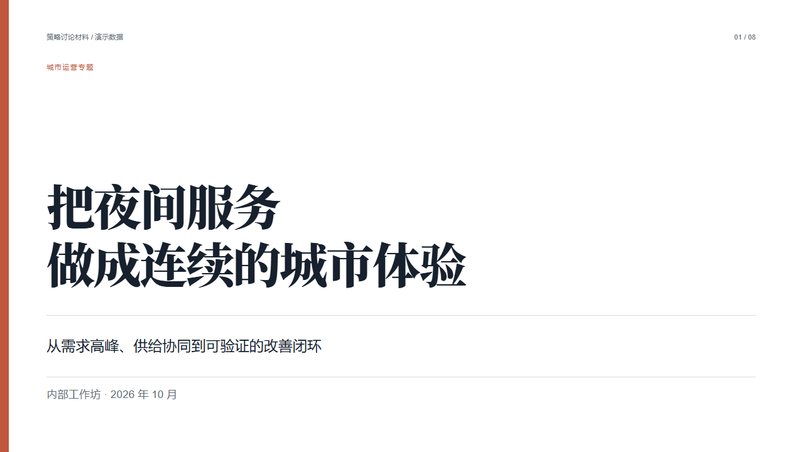
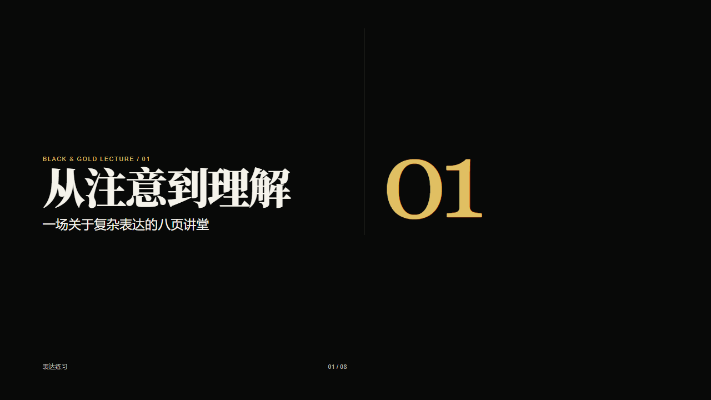
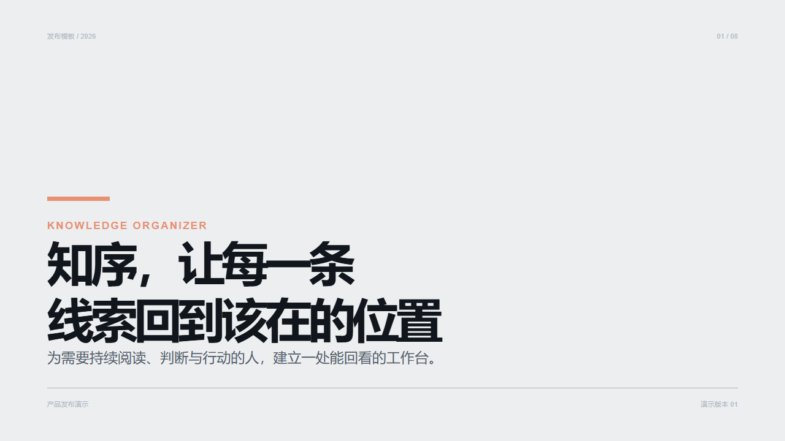
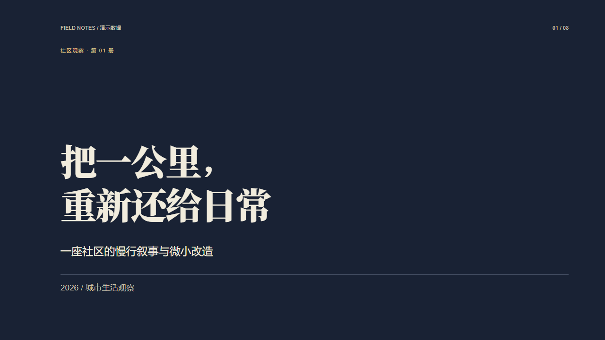

01咨询简报
浏览 8 页 ↗研究报告、方案汇报、业务分析。结论先行，以表格、时间轴和清晰的数据比较展开。
汇报要清楚，讲课要有节奏，发布要有记忆点。每种风格都提供八页完整示范，点击封面即可浏览。
没有指定风格时，按用途选择；你明确指定的原有风格继续优先。

研究报告、方案汇报、业务分析。结论先行，以表格、时间轴和清晰的数据比较展开。

课程、观点分享、方法讲解。用问题、论证、例证和停顿组织听众的理解。

新品、功能和方案发布。明快开场，深色章节，围绕关键数字与产品变化逐步揭晓。

短讲、开场、宣言与重要结论。每页留下一个判断，把解释交给讲述。

长篇叙事、作品介绍、品牌故事。深浅页面交替，用章节、非对称排版和证据保持阅读节奏。